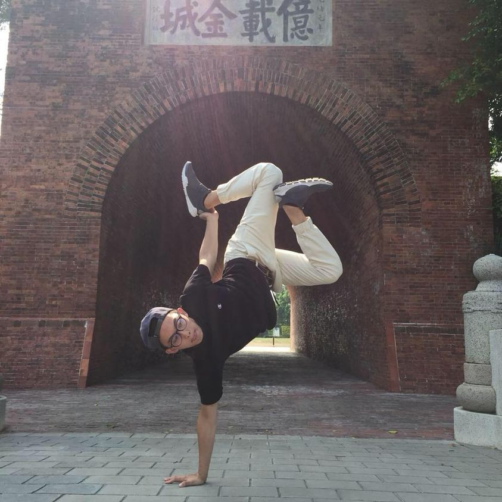

部落格
共
14
篇健康管理分享 庚翰
大家好 我是庚翰 是一個愛跳舞 又愛露營的竹科工程師 今天來和大家分享 我這45天調整完的心路歷程 1.在工作上 特別有感覺 提升了工作效率 讓我可以在上班滑手機 啊 不是 是有更多時間做其他事情 在處理工作的思緒變得更清晰 做報告也非常的得到認可 2.精神變得非常好 之前起床上班 拖著沈重的身體 很懶得起來 和要去開會的時候 難以起身的感覺 現在也通通不見了 中午即使不睡午覺 下午的工作依然處理得游刃有餘 3.身體感覺很輕盈 現在都會停車停比較遠一點 然後多走幾公尺的路去上班 也不搭電梯 改走樓梯 現在疫情也很少搭電梯 多走樓梯也不太喘 跳舞的部分更是有感 跳舞的反應 跳舞的節奏感也通通回到大學的感覺 但熟悉度可以練回來的！ 感謝健管讓我重拾我大學的感覺 是回到可以代表學校去比賽的那個體態 當初為了維持身型 不吃宵夜 不吃炸的 長達四年多 現在即使吃了也不會有罪惡感 現在更懂得把自己養的健康 也要把這份健康分享下去 讓夠多人認識健管的強大 也祝各位健管的同學都>=健康 謝謝蔡老師 育叡哥 欣怡姐讓我們有這樣的環境 也謝謝每位上課辛苦的老師 醫師 營養師 和教練 也都非常辛苦 在健管前。 健管後 體重62.8kg——>57.1kg 體脂15.9% ——>12.1% 內臟脂肪4.5%—>3% 基礎代謝1523–>1443 Bmi 21->19.1 身體年齡25—>18

2021-08-29
2342
健康管理分享 耆偉
大家好 我是10/1台北班畢業的耆瑋 是ㄧ位工程師 本身有運動跟健身的習慣、也做過飲食控制， 但是近年來同樣的方法再也瘦不下來 肚子還越來越大、內脂也越來越高、上班的精神也越來越差！ 看到大學同學孟翰和柏丞健管後都維持的超好，也讓我對健管產生好奇，後來透過諮詢了解健管的運作模式，就決定給自己一個機會來參加。 當初來健管只是想把自己體態找回來 課程結業很開心自己瘦了 氣色也變好之外 最開心是我的亞健康症狀都大幅改善！！！ 真的很意外！！！ 🌟鼻過敏 🌟濕疹 🌟汗皰疹 🌟眼睛癢 🌟脹氣 🌟胰島素阻抗 🌟膽固醇 🌟脂肪肝 我是從小就容易各種過敏的人 舉凡起床/天氣變化/塵蟎/狗貓毛/風太大 我都容易打噴嚏流鼻水 ㄧ天就可以用完整包500抽，然後去掛耳鼻喉科 近年來身體除了舊有的濕疹 還多了奇癢無比的汗皰疹在手掌上，非常困擾 常常到皮膚科報到 所以鼻噴劑/抗組織胺/類固醇是我家的必備藥品 健管完那些藥塵封在櫃子最深處了 眼睛因爲工作盯著電腦 常常乾癢 壓力大嘴巴裡同部位會ㄧ直破 所以買了很多眼藥水跟西瓜霜在辦公桌上 時常中午吃完便當下午就很容易脹氣 非常不舒服 現在上述問題都大改善 心情超好，精氣神改善 工作效率也提升很多 去年健檢數據有胰島素阻抗過高 膽固醇過高的問題 今年做完健檢大幅改善 脂肪肝也不見了 然後白頭髮變少很多 超感謝健管還我ㄧ個健康的身體！！讓我現在開心吃東西完全沒有罪惡感，而且維持的超好！ 然後有更多體力去做我想做的事情！！！ 也謝謝健管班所有的老師們，帶給我一輩子受用的知識，也在我健管期間幫助我解決我執行上大大小小的問題，超級感謝🙏 數據： 體重-7.2kg 體脂-2.3% 內脂-2.5 體年齡-5歲 純脂肪-3.5kg 胰島素阻抗2.37-》0.27 低密度膽固醇：165-》141 #過敏性鼻炎 #鼻水倒流 #嘴破 #眼睛乾癢 #濕疹 #汗皰疹 #脹氣 #白頭髮 #胰島素阻抗 #膽固醇 #脂肪肝


健康管理分想 美嘉
大家好，我是美嘉 1⃣️我從小就是身上必須帶著過敏藥的人，不是臉癢，身體癢就是頭皮癢😵💫 每次看醫生，除了吃藥，擦藥外，醫生就是叮嚀不要用洗潔劑，水洗冷一點呀～但過一陣子就會再復發，而病狀註記大概就是下面幾項： 🔥脂漏性皮膚炎 🔥蕁麻疹 🔥過敏性接觸性皮膚炎 🔥異位性皮膚炎 2⃣️便秘，就算吃吃到飽都沒有特別的感覺，每次蹲廁所也常常浪費時間做白工🥲最後都透過咖啡或早餐店奶茶才會通。 🌟🌟兩輪健管成果👇 體重 57 ➡️ 53 ➡️ 50 （-7公斤） 體脂 32.3 ➡️ 30. 1 ➡️ 26.4（-5.9%） 內脂 4.0 ➡️ 3.0 ➡️ 2.0 （-2） 體年齡 36 ➡️32 ➡️27 （-9y) 💜💙亞健康改善 📌臉部過敏大大改善，從來沒想到自己能夠和過敏藥距離那麼遙遠！皮膚狀態在健管結束後也越來越穩定🥳 📌便秘問題Bye Bye～一天沒上廁所渾身不對勁，不再花時間跟馬桶培養感情🤣 📌其他：洗頭掉髮量明顯減少，蹲站間不再頭暈，精氣神也改善💪 💖💖心得 感謝團隊各個老師豐富的上課內容，讓我學到生活上實用的營養知識，才能吃的開心又健康。🥦🍎 感謝小八老師、每週一對一課後會的繼元醫生 and 黃地老師、宏裴老師、佳宇老師、薇安醫生以及跟我分享健管的周詳 and Wendy老師。 在這段期間～不厭其煩地解惑，以及客製化地幫我調整營養品。 也感謝自己，願意在第一輪體脂沒有大幅變化的時候，繼續堅持下去第二輪💪💪 才會有第二輪更甜美的果實🍒 （即使老師耳提面命地說，營養都拿去調過敏啦👊👊 但內心還是膚淺地期待向下突破的體重 and 體脂🤣） 最後，祝福大家都能更美更健康，並不吝地把健管分享給身邊愛的人😇😇
健康管理分享 梓瑩
大家好，我是33 職業是一名加護病房護理師💉 以下是我的健管分享🌷 因爲長期輪三班及飲食不正常，從原本人人口中吃不胖的瘦子，逐漸變成另一半口中的小豬，雖然體態上變得臃腫，但穿衣服都還能遮，所以面對體脂肪來到33%時並沒有很大的危機感，反倒是另一半發現我因為體態改變變得不自信，更因為工作型態的高壓造成身心失衡，導致情緒暴躁，男友多次提醒要我正視自己身體的毛病，這才意識到原來自己已經不健康。 我曾經全力以赴，包含上健身房找一對一教練、找中醫師埋線加針灸、每天跑步機十公里，節食168、很流行的瘦瘦針我也有試過，處心積慮的努力下確實有瘦2-3公斤，但不到一個半月就打回原形，心灰意冷的是上了兩個月的健身房體脂肪只降1%，重訓引起的肌肉酸痛，每周固定額外花費按摩放鬆肌肉，施打瘦瘦針導致的皮膚入針處有些微的疤痕，當時身體開始出現副作用(頭暈、精神不濟)。 能量是有限的，我開始不斷責備自己人生為什麼要過得這麼累，不如預期的效果及疲倦感，已經無法再負荷任何的減重方法，挫折感讓我更加合理的情緒性進食，吃拉麵的時候一定要加兩坨麵才有飽足感，因為吃是我唯一能確定的事情，直到另一半參加健管後除了體態明顯變得有線條，連原本的亞健康問題都大幅改善，好奇心驅使下加入了健管。 這45天健管養成了新的健康習慣，讓我改善了 🌸mc來時不再悶痛不適 🌸偏頭痛次數減少甚至沒有 🌸排便順暢 🌸睡醒精神抖擻不會想賴床 🌸吃飽後鮮少有脹氣情形 🌸包容度變高、易怒森77頻率較低 11/25 畢業➡️1/25維持期 🟰 總共 體重 -4kg 👉-1.4kg 🟰-5.4kg 內脂 -2 👉1 🟰-2 體脂 -4% 👉-3.5% 🟰-7.5% 體年齡 -6y 👉 -3y 🟰-9y 純脂 -3.4kg 👉-1.2kg 🟰-4.6kg 腰圍 -11cm 👉-4cm 🟰-15cm 45天健管之旅讓我有信心的不是數據上的變化 而是我開始為自已的健康負起責任的那一刻 更多的是受用一輩子的健康知識💡 謝謝蔡老師、育叡老師、欣怡老師創辦RH life教室 感謝宏裴老師、周詳老師、wendy老師、黃地老師、柏丞老師、Alley老師、孟翰老師、翊筑老師還有群組裡面所有老師的協助、調整 最最感謝帶我參加健管的男友耆瑋❤️ 謝謝45天前決定參加的自己 找回身體健康的感覺真的無價🌱
健康管理分享 居峰
哈嘍！大家好我是居峰，大家可以叫我GG🤓 當初來健管是因為體脂肪開始慢慢增加 更可怕的是胃食道逆流導致我無法重訓，體重跟內臟脂肪不斷往上創新高！ 其實我試過很多方法想改善胃食道逆流都無疾而終，中醫與西醫都吃了半年以上的藥。 最後在我的師傅也是我的恩人“““源晉老師”””和我分享健管的架構 當下聽完就馬上說要來參加課程 希望可以改善我的胃食道逆流。 健管真的很神奇，第四週左右開始我的胃食道逆流就有大幅度的改善。 上完課之後也發現健管非常科學，才知道健管其實可以改善我們很多亞健康問題！ 最後感謝源晉老師以及教室每位老師的幫助與協助,讓我找回健康🤩 健管成果 體重：-5.9kg 純脂肪：-2.23kg 體脂：-1.9% 內脂：-1.5 年齡：-5 years 改善成果: 1.原本鼻子過敏嚴重，早上會用一堆衛生紙，健管完後省了很多衛生紙錢 2.以前怎麼睡都睡不飽，現在只要睡的時間對，精神都超好 3.最重要的就是胃食道逆流完全改善，讓我又可以開心吃甜食跟喝酒🤣🤣🤣🤣🤣🤣🤣🤣🤣🤣 4.六塊腹肌讓我重獲信心 5.科技業誰沒有眼睛乾澀的問題，健管期間也獲得大幅度改善 心得: 很感謝源晉老師、宏裴教練以及健管的老師們，讓我學會營養知識如何維持與平衡，改善我困擾很久的胃食道逆流 成功秘訣就是:相信，聽話，照著做
健康管理分享 孟翰
📌從小到大，胖這個字就沒離開過我的字典，小學的時候甚至因為太胖不能加入電腦社，而且被老師逼加入排球社去運動😭😭😭 📌長大之後開始打籃球🏀看能不能瘦一些，於是我曬黑了🤣 持續肥胖之旅 📌開始工作之後，開始接觸到健身，途中靠著拼命的健身💪加上超難吃的水煮餐🍠終於讓我瘦了下來，但只是曇花一現..... 一離開水煮餐加健身... 📌禁不起美食誘惑的我加上有了個小寶貝後，肚子開始越來越團結，終於在今年達到人生最胖80⬆️ 危機就是轉機？ 📌可能老天也看不下去了，於是祂派了冠綸哥來指引明燈，於是我開始接觸了健管！ 📌45天！每天都吃超飽！但體重卻一天比一天更低，很難形容的爽！ 成果 🔥體重-7.9kg 🔥體脂-5.3% 🔥內脂-3 🔥純脂-5.88kg 🔥身體年齡-8歲 非常滿意😃 🔥🔥🔥意外收穫也是最大收穫 📌止痛藥out！困擾我10幾年的偏頭痛終於解決了！以前一個禮拜都會頭痛2-3次，每次痛起來都必須嗑好幾顆止痛藥💊💊！但健管後一次都沒痛過，一次都沒有！！ 📌營養知識的獲得，以前總是把茶當水在喝的我，現在回頭看看真是幽默！尤其是教室裡每位專業到不行的老師都不藏私的傾囊相授，尤其是非常淺顯易懂的教學方式，連我這種營養知識一直都是(0)分的人也能有基本營養概念📖，也不用再一直擔心會再復胖😏😏😏 #知識很重要 #下一步腹肌
健康管理分享 翊筑
哈囉！大家好，我是翊筑，2020年十月結束健管，換我跟大家分享我的改善。 自從幾年前生完小孩之後，無論是體況還是身材都變得非常可怕😱 當初參加健管就是因為體態很醜、肚子很凸和無時無刻的頭暈與虛弱感而來。 跟很多人不同，我並不是抱著姑且一試的態度來，而是看到跟我有相似狀況的妹妹從課程中獲得改善，而相信課程。 上完第一堂上課就完全被震撼到，因為實在太專業了，執行期間老師給我什麼指示我就一律照做，覺得疑惑就主動問原因、問原理。 執行期間飲食算是輕鬆容易，有吃飽就不會胡思亂想。 當然過程也不完全順利，所以我真的非常感謝會後會的老師們，耐心傾聽我的困擾，幫我做適當的調整。 一個半月的成績： 體重50➡️46 體脂24➡️18 內脂2➡️1 體年齡24➡️18 更讓我無比開心的是，困擾很久的毛病幾乎都好了，頭不暈了，身體也變得很有力量，其他過敏腸胃婦科問題也都一起改善，甚至還附加了腹部的線條！ 真的很開心可以認識這個課程，學到很多的營養知識，健管結業之後，我覺得人生又重新開始了，將來要瘦一輩子、健康一輩子！ 祝福還在執行的同學都能達到自己想要的體態和健康狀態。❤️